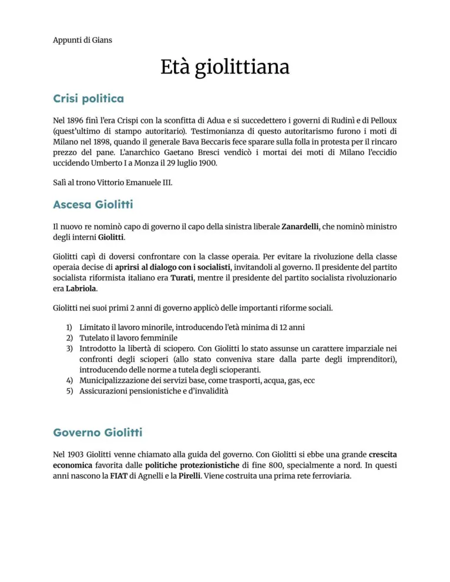
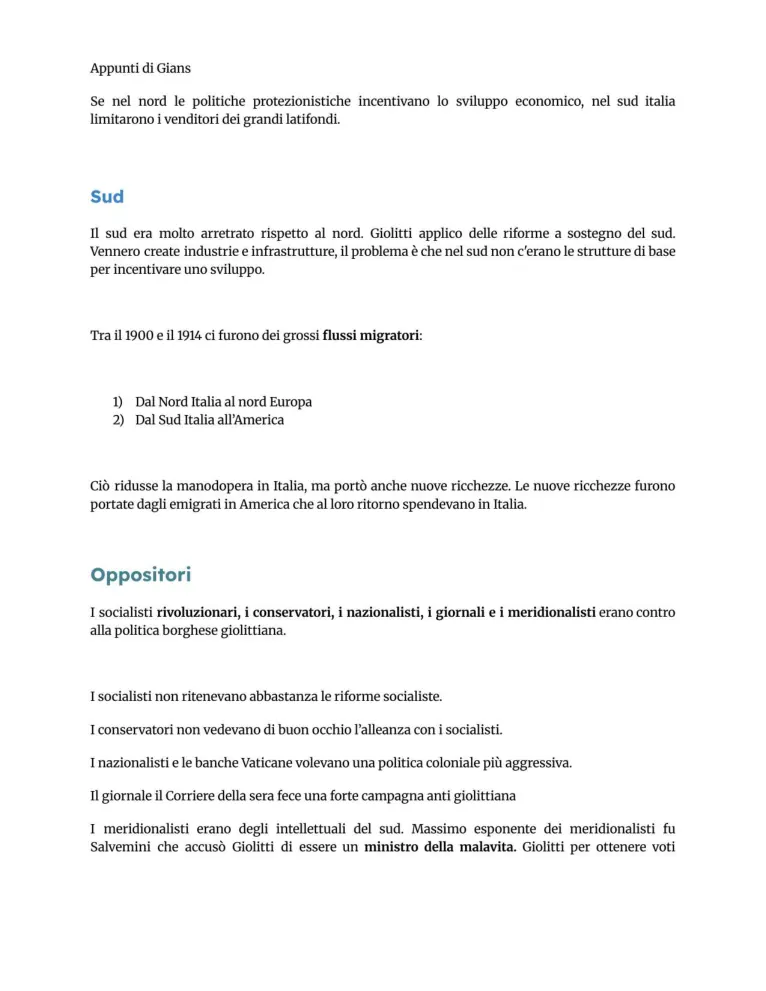
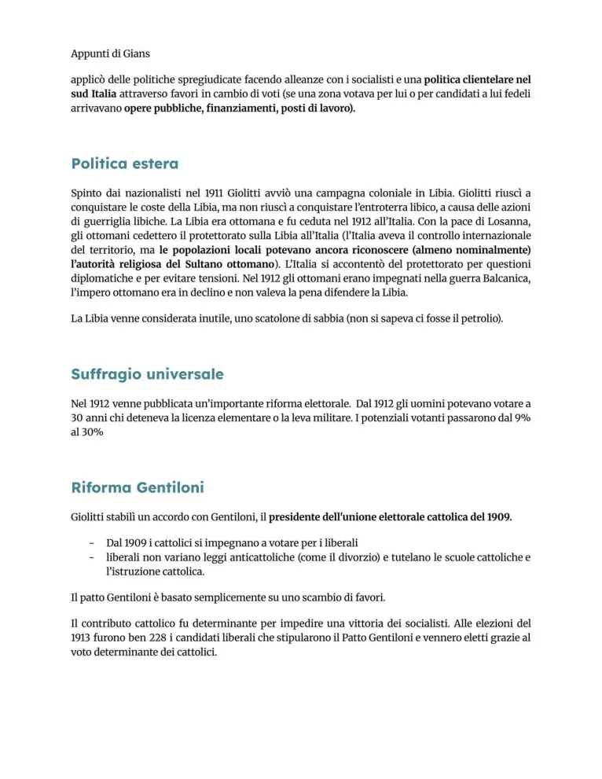

Età giolittiana
Riformismo, neutralità nei conflitti sociali, suffragio, questione meridionale, Libia e patto Gentiloni.
Studio guidato
Caratteri generali
L’età giolittiana indica la fase dominata da Giovanni Giolitti all’inizio del Novecento. Il governo cerca di integrare socialisti riformisti e cattolici nella vita politica, usando riforme e mediazione.
Politica interna
Giolitti tende a non reprimere automaticamente gli scioperi economici e lascia che i conflitti tra lavoratori e imprenditori si svolgano quando non minacciano l’ordine pubblico. Ciò favorisce la crescita di sindacati e organizzazioni operaie.
Riforme e suffragio
Tra le riforme centrali ci sono interventi sul lavoro, istruzione e previdenza. Nel 1912 viene introdotto il suffragio universale maschile, ampliando fortemente la partecipazione politica.
Limiti
Restano forti squilibri tra Nord e Sud. La questione meridionale, il trasformismo e il rapporto ambiguo con le élite locali mostrano i limiti del riformismo giolittiano.
Politica estera
La guerra di Libia del 1911-1912 nasce dal desiderio di espansione coloniale e prestigio internazionale. Il patto Gentiloni del 1913 facilita l’appoggio cattolico ai candidati liberali.
Parole chiave
Pagine originali dal file
Le immagini sotto mantengono il riferimento diretto alle pagine del PDF usato come base del sito.



Quiz finale
Devi rispondere correttamente a tutte le 12 domande. Se ne sbagli anche solo una, il quiz si azzera e ricomincia da capo.